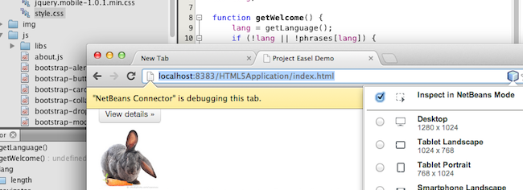
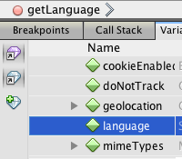
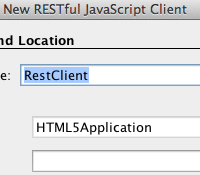
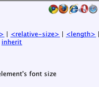

Clique na imagem para exibição em tela inteira
A partir do NetBeans IDE 7.3, foram introduzidos novas funcionalidades para oferecer suporte e melhorar a experiência de desenvolvimento com aplicações Web no lado do cliente que utilizam a família de tecnologias HTML 5. Você pode usá-lo para criar interessantes aplicações Web de forma rápida e intuitiva, que sejam compatíveis com o paradigma de design Web direcionado a desktops e plataformas móveis ao mesmo tempo. Além disso, você pode usar as tecnologias de HTML5 nas aplicações Java EE e PHP.
O NetBeans IDE permite o desenvolvimento acelerado da aplicação Web HTML5 logo que você cria um projeto em HTML5. Você pode selecionar em uma lista on-line de modelos comuns de projetos em HTML5 ou especificar a localização de um arquivo .zip de um modelo de site. Quando você cria um projeto com base em um modelo de site, os arquivos, as bibliotecas e a estrutura do projeto são determinados pelo modelo.
Se preferir, você pode usar todas as funcionalidades de HTML5 descritas abaixo, após criar as aplicações Java EE e as aplicações PHP.
Depois de configurados, a funcionalidade de visualização ao vivo das páginas Web, o suporte ao editor, a capacidade de depuração e outras funcionalidades ajudam no desenvolvimento, no teste e na depuração das aplicações em HTML5, Java EE e PHP.
Conceitos Básicos do Desenvolvimento em HTML5
Melhor que o WYSIWYG, como a maioria dos desenvolvedores profissionais admitiria, a forte integração com o Chrome e o Browser interno Incorporado do WebKit, ambos baseados no WebKit, garante uma conexão inigualável entre seu código e o design da página.
Com o uso das APIs remotas do WebKit, você continua a ter visibilidade completa e controle do código no IDE, obtendo feedback visual instantâneo da página do browser.
Observação: a visualização ao vivo das páginas Web também ficam disponíveis nos dispositivos móveis, ou seja, não apenas no Chrome e no Browser interno do WebKit Incorporado, mas também no Chrome e Android e no Mobile Safari em iOS.
O NetBeans IDE suporta o uso de arquiteturas de Design da Web Responsivo, permitindo a seleção de vários fatores para sua página da Web e o layout instantâneo de elementos visuais da página da Web no browser para esse fator de forma. Você pode selecionar entre uma série de fatores de forma predefinidos, variando de smartphones a áreas de trabalho, nos modos paisagem ou retrato.
Além de aprimorar os recursos dos browsers, o editor CSS Style do IDE também considera a consulta de mídia que o browser está exibindo no momento e insere, automaticamente, edições no CSS nessa consulta de mídia.
O suporte a JavaScript no IDE foi aprimorado. O suporte inclui codificação por cores da sintaxe específica do framework de JavaSript, recurso de autocompletar código e também outras ferramentas de edição e refatoração.
Os seguintes frameworks de JavaScript são suportados: jQuery, JSON, Knockout, Ext Js, AngularJS, JsDoc, ExtDoc e ScriptDoc.
Agora também é possível controlar as opções de formatação da linguagem JavaScript na caixa de diálogo Opções.
Suporte de edição aos pré-processadores Sassy CSS e LESS CSS, incluindo coloração semântica e sintática para construtores da linguagem, recuo, reformatação, dobramento de código e modelos de arquivo. As ferramentas autocompletar código e da refatoração estão disponíveis para variáveis e mixins.
A profunda integração com browsers Webkit permite ver as alterações feitas na janela de Estilo do CSS ao vivo, enquanto elas acontecem no browser. Não é mais necessário adivinhar como será a aparência das alterações de CSS, até a atualização do browser. As alterações ocorrem ao vivo e no código-fonte.
Você também pode "inspecionar" a partir do browser, e a janela Estilo CSS exibirá as regras de CSS do elemento selecionado no browser automaticamente. Agora, você pode editar CSS usando as propriedades da janela Estilo de CSS ou ir diretamente para o código-fonte de CSS e fazer as edições, com recurso de autocompletar código e documentação em linha.
Trabalhando com CSS em Aplicações HTML5
Observação: o suporte ao estilo e à edição de CSS também ficam disponíveis nos dispositivos móveis, ou seja, não apenas no Chrome e no Browser interno do WebKit Incorporado, mas também no Chrome e Android e no Mobile Safari em iOS.
Desenvolver aplicações em HTML5, JavaScript e CSS3 e deixar o IDE criar distribuições nativas para você, por meio de seu suporte Cordova/PhoneGap. Cada projeto HTML5 no IDE pode ser ativado em um pacote de iOS e Android nativo e pode ser implantado para o dispositivo nativo diretamente do IDE.
O IDE permite que você edite visualmente os arquivos CSS e depure o JavaScript no browser Chrome e o browser do WebKit incorporado, bem como diretamente nos dispositivos iOS (Safari) e Android (Chrome).
Observação: qualquer tipo de aplicação Web, seja HTML5, Java EE ou PHP pode ser testadas e depurada em um dispositivo móvel.
Depuração e Teste |
Consumo de Serviços Web |
Conformidade entre Browsers |
|
 |
 |
 |
{kind=link}
{kind=link}
{kind=link}
{kind=link}
{kind=link}
{kind=link}
{kind=link}